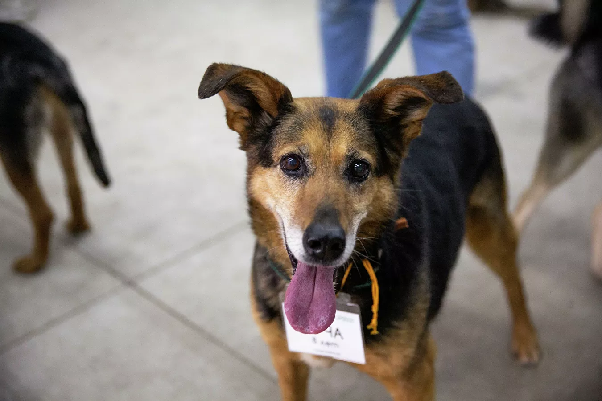
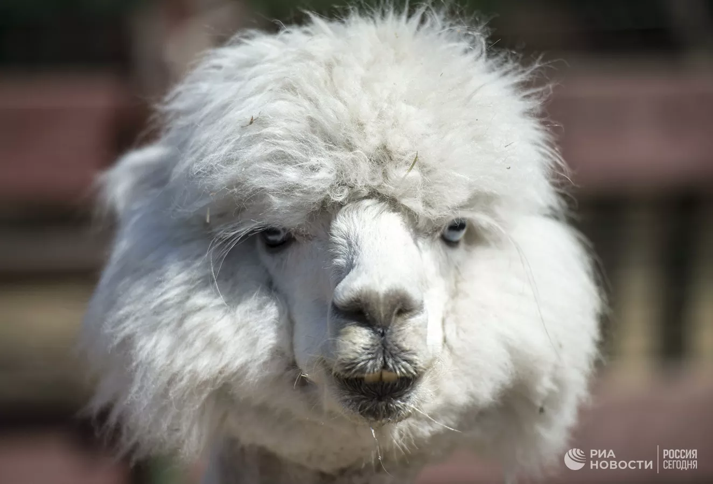
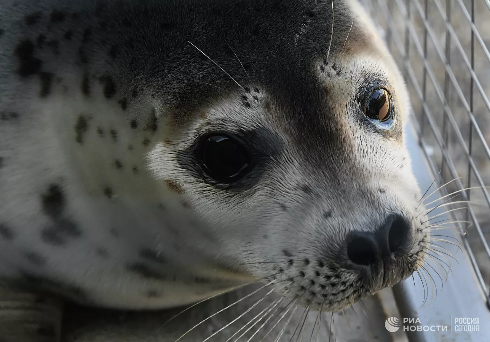
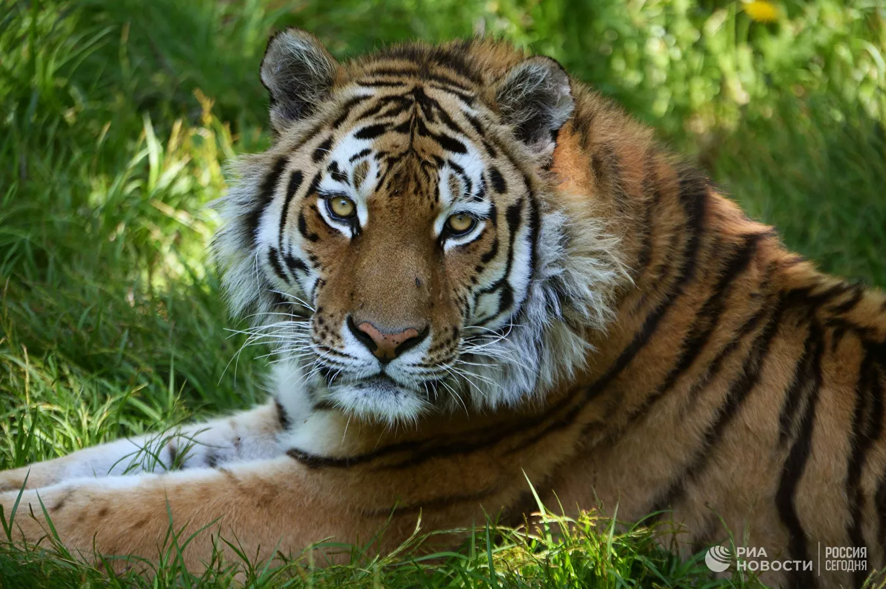
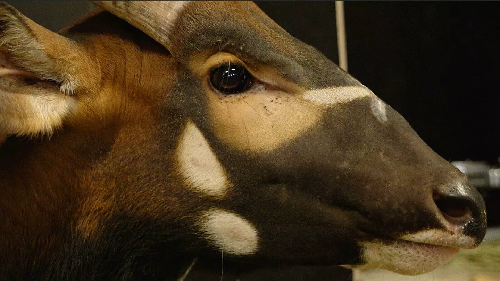
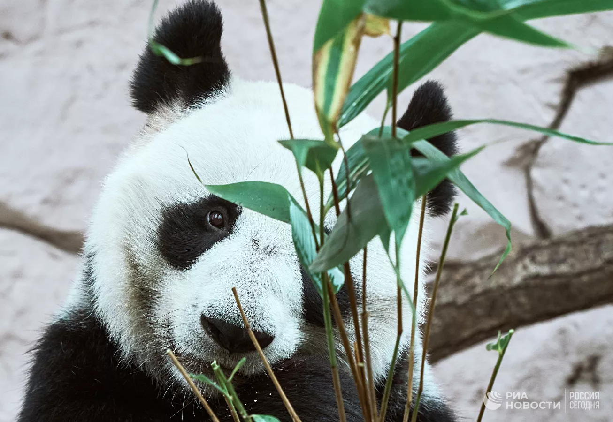
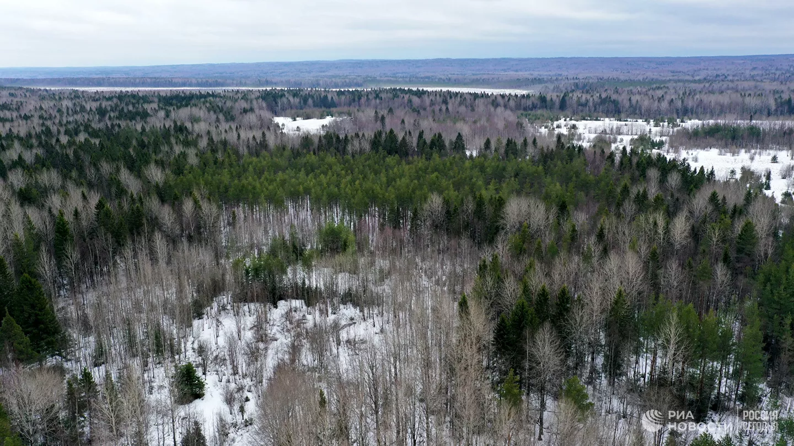
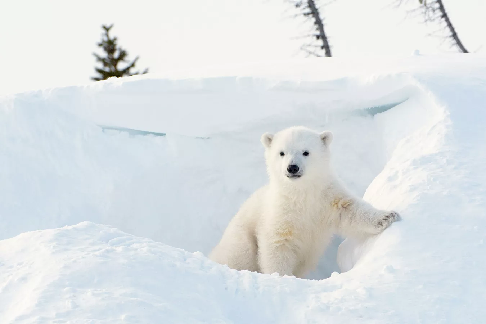

/ Хорошие новости /

В Москве пройдет выставка бездомных животных #НадоБратьЗимой2022

Служба безопасности пропустила в московское метро альпаку вопреки правилам

Во Владивостоке спасли забравшегося в плавдок тюленя

Амурскому тигру больше не грозит исчезновение, заявили в WWF России

В Московском зоопарке начнут разводить краснокнижных антилоп бонго

Московский зоопарк будет бесплатно пускать гостей с подарками для животных

В Вологодской области спасли двух новорожденных медвежат

У "домашних" белых медвежат на Ямале появился Instagram